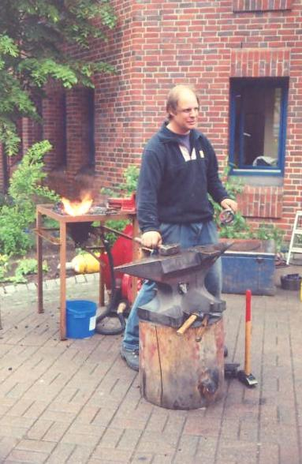
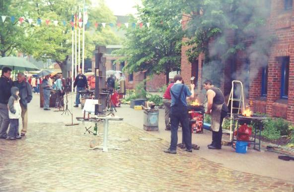
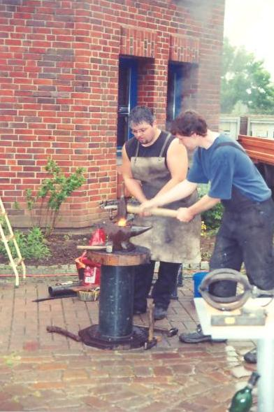
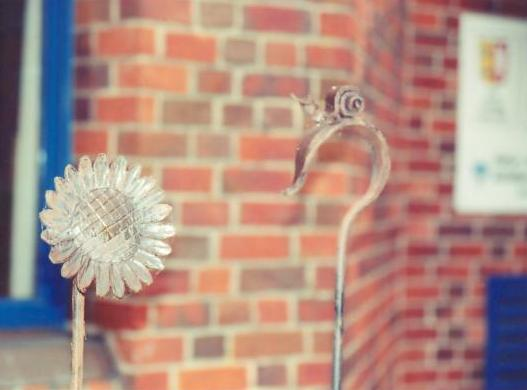
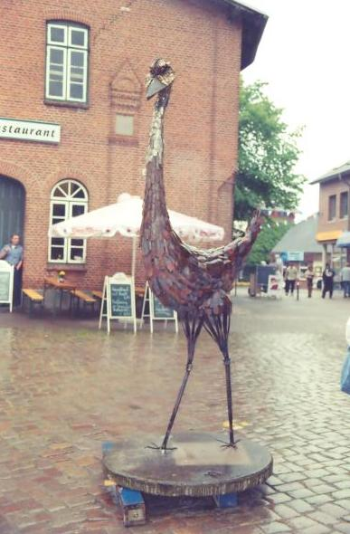
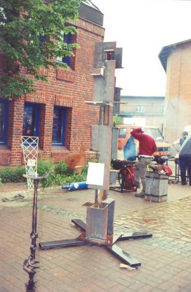

This meeting was held in the town square and as you can tell, it is held rain or shine. The town square is a very busy area, especially in a small town. Several busy stores as well as the visitor's center line the "square." Furthermore, the town square is regularly used by other ordanizations and a market is held once a week. As such, the market place is a common and frequent meeting space.
There are several benefits of holding a smithing meeting in a central space:
|  |
| Heiko Voss, owner of Feuer, Eiseen und Ideen, the organizer of the meeting. |
|  |
| The meetings are held, rain or shine, in the town square, which is not always square. |
|  |
| Doing what smiths are doing. |
|  |
| Gardenstakes for sale. |
|  |
| A sculpture for sale. |
|  |
| An I-Beam modified to receive objects produced at the
meeting. They will be welded to the platforms and the scuplture will be donated to a public institution. |